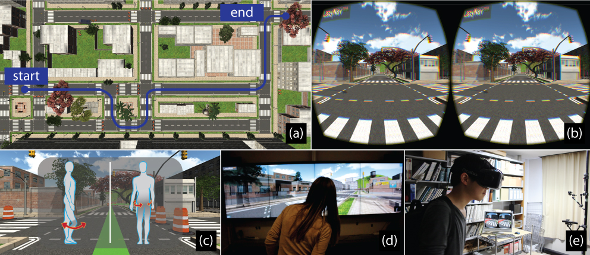

LazyNav: Virtual 3D Ground Navigation for Large Displays and Head-Mounted Displays
ICAT-EGVE 2014, IEEE 3DUI 2015 [Best Paper Award], and IEEE TVCG 2016
With the growing interest in natural input devices and virtual reality, mid-air ground navigation is becoming a fundamental interaction for a large collection of application scenarios. While classical input devices (e.g., mouse/keyboard, gamepad, touchscreen) have their own ground navigation standards, natural input techniques still lack acknowledged mechanisms for travelling in a 3D scene. In particular, for most applications, navigation is not the primary interaction. Thus, the user should navigate in the scene while still being able to perform other interactions with her hands, and observe the displayed content by moving her eyes and locally rotating her head. Since most ground navigation scenarios require only two degrees of freedom to move forward or backward and rotate the view to the left or to the right, we propose LazyNav a mid-air ground navigation control model which lets the users hands, eyes or local head orientation completely free, making use of a single pair of the remaining tracked body elements to tailor the navigation. To this end, we design several navigation body motions and study their desired properties, such as being easy to discover, easy to control, socially acceptable, accurate and not tiring. We also develop several assumptions about motions design for ground navigation and evaluate them. Finally, we highlight general advices on mid-air ground navigation techniques.

We performed a user study to evaluate several ground navigation metaphors. (a) A top view of the virtual environment includes the path use ina formal user study, participants have to follow the path as accurate as possible. (b) A field of view inside a HMD based user study. (c) At the begin-ning of the session, the available motions are displayed to the participant. (d-e), A user is traveling in the scene with the LD and HMD settings whileholding a cup in his hand or carring a bag in his back.
Publication:
1.
Parinya Punpongsanon,
Emilie Guy,
Daisuke Iwai,
Kosuke Sato, and
Tamy Boubekeur.
Extended LazyNav: Virtual 3D Ground Navigation for Large Displays and Head-Mounted Displays.
IEEE Transactions on Visualization and Computer Graphics.
Vol. 23, No. 8, PP. 1952-1963. August 2017.
2.
Emilie Guy,
Parinya Punpongsanon,
Daisuke Iwai,
Kosuke Sato, and
Tamy Boubekeur.
LazyNav: 3D Ground Navigation with Non-Critical Body Parts.
In Proceedings of IEEE Symposium on 3D User Interfaces (3DUI) 2015, PP. 43-50. Arles, France, March 2015.
(Best Paper Award)
3.
Parinya Punpongsanon,
Emilie Guy,
Tamy Boubekeur,
Daisuke Iwai, and
Kosuke Sato.
Ground Navigation in 3D Scenes using Simple Body Motions.
International Conference on Artificial Reality and Telexistence with Eurographics Symposium on Virtual Environments (ICAT-EGVE) 2014,
PP. 19-20. Bremen, Germany, December 2014.